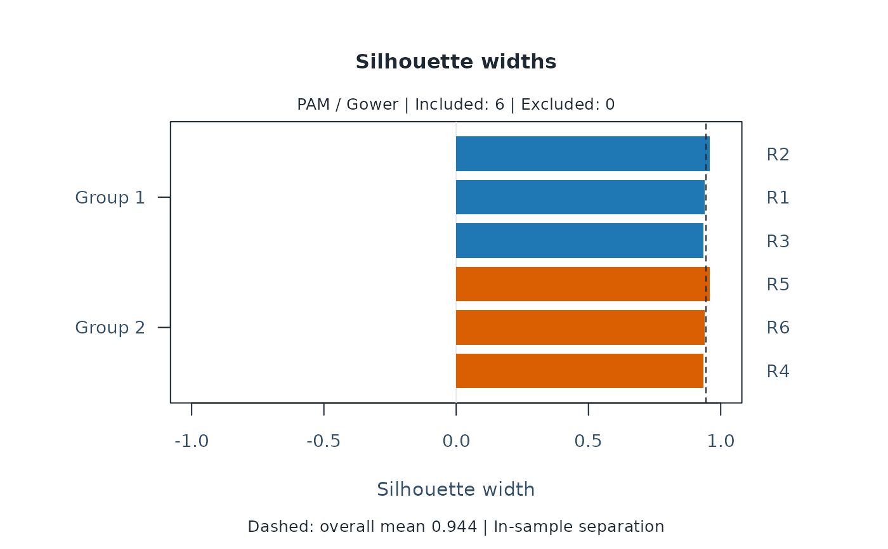
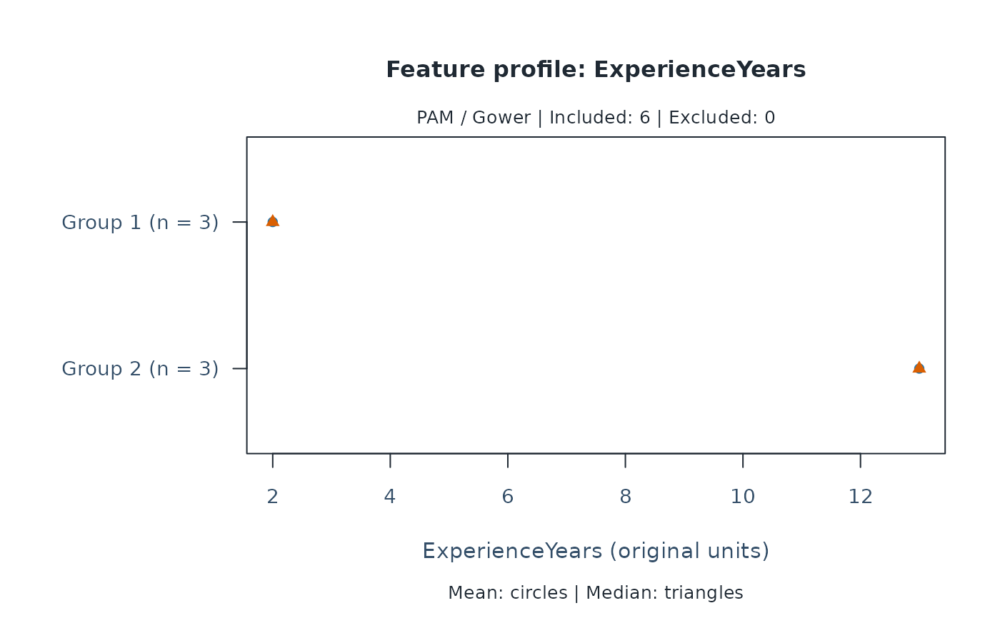
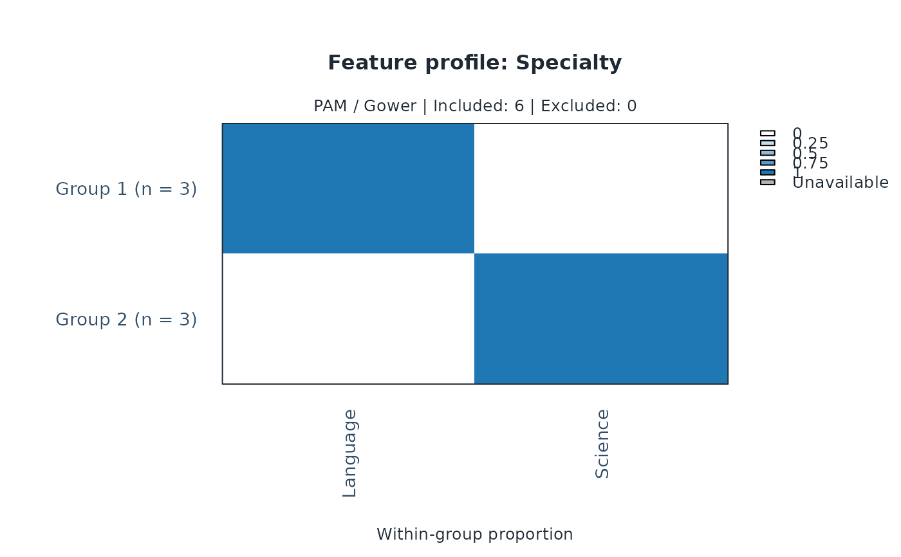

Plot exploratory groups and imputation sensitivity
Source:R/api-plotting-clusters.R
plot.mfrm_clusters.RdInspect within-sample separation, individual feature profiles, or pairwise co-membership across imputations using existing clustering results.
Arguments
- x
An object returned by
mfrm_cluster()ormfrm_cluster_imputed(), as appropriate.- type
For a single partition,
"silhouette"or"profile".- feature
A single selected feature name, required for
type = "profile". Numeric features show means and medians in their original units; categorical features show within-group proportions in the original level order (including unused factor levels).- labels
Whether to display entity IDs on silhouettes or heatmaps. The default displays them for at most 50 entities. No entities are sampled when labels are hidden. Profile plots always label groups and levels.
- draw
Draw the plot when
TRUE;FALSEonly returns plotted values.- preset
Plot style:
"standard","publication","compact", or"monochrome".- ...
Reserved for future use; additional arguments are rejected.
- ids
For imputation heatmaps, an optional character vector of distinct entity IDs in the desired display order. Selection affects only the view, not clustering or the denominator. By default all IDs appear in input order.
Value
Invisibly, an mfrm_plot_data object. Its data contains the plotted
table or matrix, title, subtitle, legend, and excluded IDs. Heatmaps also
retain the displayed IDs and the number of imputations. Use plot_data()
to extract this payload for custom graphics.
Automatic as_ggplot() conversion is not supported for these views.
Details
No model or clustering is refitted. Silhouette widths describe separation in the fitted sample, not stability or probabilities. The dashed line is the overall mean silhouette; excluded entities have no silhouette.
Feature profiles describe one partition; numeric summaries have no confidence
intervals. For an imputed result, inspect a completion with
plot(x$analyses[[1]], type = "profile", feature = "ExperienceYears").
Cluster numbers must not be averaged across imputations.
Imputation heatmaps show the fraction of all supplied imputations in which
each pair belongs to the same group, on a fixed zero-to-one scale. Grey cells
are unavailable pairs involving excluded entities, not zero co-membership.
These fractions describe sensitivity to imputations under fixed settings,
not membership probabilities, sampling stability, or a consensus partition.
Rows and columns follow input order or explicit ids; no hierarchical
clustering is performed. PAM is nonhierarchical and these plots do not
provide a dendrogram. Use mfrm_cluster_hierarchical() for a separate
hierarchical analysis and its dendrogram.
Examples
if (requireNamespace("cluster", quietly = TRUE)) {
raters <- data.frame(Rater = paste0("R", 1:6),
ExperienceYears = c(1, 2, 3, 12, 13, 14),
Specialty = factor(rep(c("Language", "Science"), each = 3)))
groups <- mfrm_cluster(mfrm_features(raters, "Rater",
c("ExperienceYears", "Specialty")), k = 2)
plot(groups)
plot(groups, type = "profile", feature = "ExperienceYears")
plot(groups, type = "profile", feature = "Specialty")
values <- plot_data(plot(groups, draw = FALSE))
values$table
}



#> ID Cluster Medoid Silhouette
#> 2 R2 1 TRUE 0.9583333
#> 1 R1 1 FALSE 0.9400000
#> 3 R3 1 FALSE 0.9347826
#> 5 R5 2 TRUE 0.9583333
#> 6 R6 2 FALSE 0.9400000
#> 4 R4 2 FALSE 0.9347826